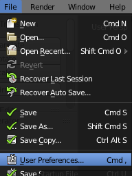
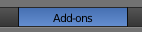
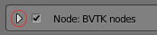
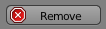
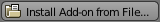
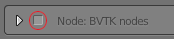

1. Prerequisites
Since this is an update guide, we'll assume that you have already installed all the required software, most importantly VTK, and that you know how to launch blender
from the terminal.
2. Download
Obviously to update the add-on you'll have to download the latest version of the add-on from here.
You will get a zipped folder: don't unzip it, leave it as it is. If you want to find the .zip more easily later you can move it to the location you prefer.
3. Remove the previous version
Open blender from the terminal.
In the top bar choose
File > User Preferences
and click on the menu option. The preferences window should pop up.

In the window just opened, select the
Add-ons
section.

Locate the
search field

near the top left corner of the window and type in 'BVTK'.
Now you should be able to click the
expand arrow
next to the name.

Now just click the
remove
button. Then confirm by clicking OK.

4. Install the new version
Still on the preferences window, click
Install Add-on from File...
.

Search among your files for the zip previously downloaded, then click once again
Install Add-on from File...

near the top right corner of the window.
Then click on the
checkbox
next to the add-on name. You may have to wait a few seconds.

Take a look at the terminal. If you don't see any errors, you've successfully updated BVTK.